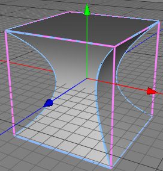
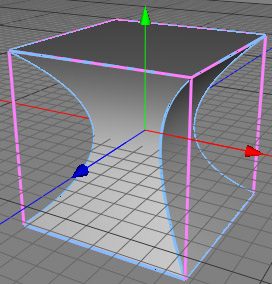

Bulge Modifier
The bulge modifier bulges an object along the X and Z axis. This can be used if you want to press a object through a small hole. The same modifier can be used with a negative strength to blow up a object.
 

strength=-0.5
Properties
- Cage: See the description of the modifier object.
- Type: See the description of the modifier object.
- X-axis: Bulges the object along the X axis if ON.
- Z-axis: Bulges the object along the Z axis if OFF.
- Strength: The strength of the modification.